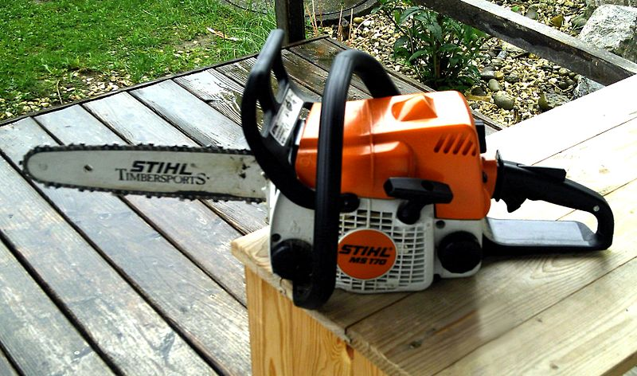
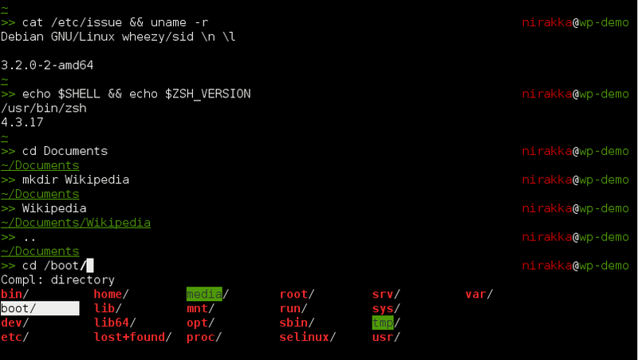

Unix never says 'please'.
-- Rob Pike

Unix hasnt killed anyone. Yet.
Write programs that do one thing and do it well.
Write programs to work together.
Write programs to handle text streams, because that is a universal interface.
-- Doug McIlroy, the inventor of Unix pipes

'grep' shows only lines that contain some matching expression.
'awk' is grep on steroids.
'tr' translates one set of characters to another.
strength
|
weakness
|
weakness
|
limiting belief
|
Bernhardt's talk inspired me to revisit my approach to using the shell.
Insight:
limiting belief
|
empowering question
|
what would beautiful shell look like?
striving for readable, understandable code often results in many small, well-named methods.
-what Kent Beck refers to as the Composed Method pattern
tensions between interactive CLI and batch script interpreter:
interactive CLI is the native habitat for building up pipelines
non-interactive script files are the native habitat for shell functions
what if it were easier to ^ interactively apply modern coding practices compose shell functions?
what if shell programs were always available for refactoring?
what would beautiful shell look like?
Comments are helpful. Shell scripts allow them, but in-memory functions don't.
Since the values passed on the command line of the null command are ignored, the null command can be used as a comment.
However, there is no advantage to using this--it is more of a novelty than a practical technique.
Blinn, 205
/